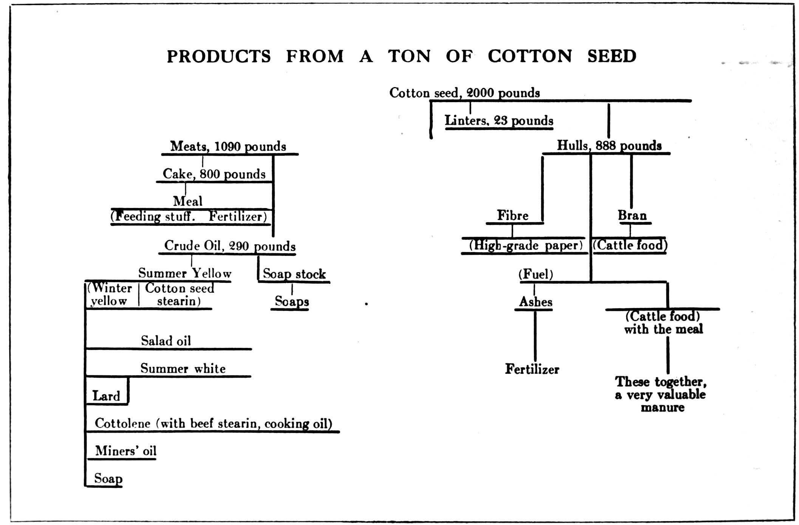

Every farmer in the United States knows that farming is to-day an industry which calls for study of the world’s agricultural products, processes, and markets as well as for scientific knowledge of soils, crops, and animals. Fifty years ago the farmer sold for consumption in his immediate neighborhood the small surplus of his crops that was not needed for his own household and live stock. To-day he competes, in all the world’s great markets, with all the world’s farmers, and is the chief among American exporters. The Russian wheat fields and the Argentine cattle ranches are really nearer to him than a farm in the next township was to his grandfather. He lives better, does more for his children and pays higher wages than do farmers in other parts of the world, and yet he can successfully compete with them, because, as the article on Agriculture in the Encyclopædia Britannica says, in speaking of the United States, “there is no other considerable country where as much mental activity and alertness has been applied to the cultivation of the soil as to trade and manufactures.” American farmers “have been the same kind of men, out of precisely the same houses, generally with the same training, as those who filled the learned professions or who were engaged in manufacturing or commercial pursuits”; and their competitors abroad have been, for the most part, ignorant peasants. The course of reading indicated here is designed for wide-awake farmers who intend to be large farmers—by whom the latest information and the broadest outlook are recognized as essential to their calling. If you think the articles named here cover a great deal of ground, remember that the Massachusetts Agricultural College provides no less than sixty-four distinct courses of instruction, and that the subjects included in all the sixty-four are treated in the Britannica.
GETTING “GROUNDWORK” KNOWLEDGE
You may think, as you look at the titles of articles mentioned in these pages, that there are some which you need not read because you have already read bulletins of the United States Department of Agriculture or of your State Experiment Station. These official publications are most valuable, but naturally, they do not attempt to cover the whole range of agricultural subjects as the Britannica does—they are not intended for that purpose. Their arrangement and the way in which they are issued shows that they are designed to meet only certain special needs, not to give a general view of all the branches of farming. One subject may for example be discussed in three different bulletins, published in three different years, and the first may be out of print before the third appears. In the Britannica you get information that forms the very foundation of a thorough knowledge of farming and that also extends over the widest field. Of course it would be absurd to say that merely reading these articles will make any man a successful farmer as to say that a medical student who works hard at his books will always develop the tact and the sound judgment that a doctor needs. But unless the medical student has studied those text books he will never make a successful doctor; and similarly the information in the Britannica will give the farmer new advantages, no matter how much practical experience and special training he has had.
Scope of the ArticlesThere are in the Encyclopædia Britannica 1,186 articles dealing with animal and vegetable life; and among the 11,341 geographical articles a great many give important information about the production, distribution and consumption of farm products. Those upon continents, countries, states and provinces describe the local crops and any local methods of farming that are of special interest. There are some 600 articles on individual plants, of which a list will be found on pp. 889 and 890 of Vol. 29 (the index volume). If any one of these thousands of articles were not in the Britannica, it would not be quite so valuable as it is to you, for you may, any day, want to find out about any plant that grows, or about farming in any part of the world. A professor in an agricultural college would of course be glad to study the whole series. But in this Course of Reading only the articles which are of most immediate use to all practical farmers are mentioned, and the contents of each of these is described, so that you can omit any article that goes into details which you think you do not want. If you do skip any of them, it will, however, be a good plan to mark their titles in this list, for you may like to come back to them later when you realize how practical and understandable all the Britannica articles are—even those with dullsounding names.
Of course you will begin by reading the article Agriculture (Vol. 1, p. 338), by Dr. Fream and Roland Truslove, which is the key to the whole subject. And remember that this chapter of the Readers’ Guide mentions only those subjects that are treated more fully in other parts of the Britannica than in that article, so that the chapter does not attempt to tell the whole story.
Soil and SubsoilThe first thing a farmer has to deal with is the ground from which his crops are to come. The whole surface of the earth was originally hard rock. The article on Petrology, the science of rocks (Vol. 21, p. 323), by J. S. Flett, and the second part (Vol. 11, p. 659) of the article Geology, by Sir Archibald Geikie, deal with the “weathering” of rock, which has in great part broken it down into the small particles of stone that, mixed with decayed roots and plants, form the soil or subsoil. It may seem that it is going very far back into the origin of things for a farmer to read about the sources from which soil comes, but the nature of the mineral substances in it has a great deal to do with its power to nourish plants, and you cannot know too much about the material on which your principal work is done. The article which should next be read, Soil (Vol. 25, p. 345), continues the story of these particles of rock and shows how sand and clay must be combined with decaying vegetable or animal matter in order to make the best soil. This mixture is in turn “weathered” by air, heat, frost, and moisture; and not only the size of the grains in which it lies, but also their shape—which makes them pack more or less tightly—affect the pores, or spaces between the grains, through which the roots of the plants must push their way, and through which air and water must reach these roots. The article Earthworm (Vol. 8, p. 825) describes the useful part that worms play in stirring the mixture, while the natural and artificial fertilizers, which supply whatever ingredients the soil lacks, are discussed in the article Manures and Manuring (Vol. 17, p. 610). An important part of this article deals with the best methods of keeping farm yard manure in such a way that it does not lose its value before it is spread over the fields, and with the use, in this connection, of the liquid-manure tank. The microbes in the soil render the farmer an enormous service by changing crude nitrogen, which plants cannot digest, into the forms in which it is indispensable to them, and this process is described in the article Bacteriology (Vol. 3, p. 164), by Professor Marshall Ward, Professor Blackman, and Professor Muir.
Sunlight and Shade, Heat and Cold, Water Enough—and Not too MuchThe action of light, the supply of which is just as necessary in causing growth as the warmth the sun gives, and the action of water and of heat and cold, are explained in the section “Physiology” (Vol. 21, p. 745) of the article on Plants. The proper method of working each farm, with a view to using these four in the right proportions, is influenced by the latitude in which it lies, its height above sea level, the protection that mountains give it, the slope at which the fields face the sun or turn away from it, the rain-fall, the relative dampness or dryness of the air when it is not raining, and the moisture of the soil. Every one of these subjects is vital to the farmer, and the Britannica brings to its readers the latest information regarding them in articles written by the leaders of progress. You will find the latest scientific guidance, in the most practical shape, in the articles Climate (Vol. 6, p. 509), by Professor R. de C. Ward, of Harvard, Meteorology (Vol. 18, p. 264), by Professor Cleveland Abbe, of the United States Weather Bureau, and Acclimatization (Vol. 1, p. 114). The distribution of heat in the soil is described in the article Conduction of Heat (Vol. 6, p. 893), where the diagram showing variations of temperature at different depths in the soil should be carefully studied.
Drainage and IrrigationThe brackish water that troubles farmers near tidal creeks, the alkali water that often occurs West of the Mississippi, and the stagnant water that never does the farm any good, are all as bad in their way as the river-floods or the merely sodden soil in which nothing will grow but coarse grass that is always unsafe pasturage. Drains and embankments need very careful planning, and sound information will be found in the articles Drainage of Land (Vol. 8, p. 471), Reclamation of Land (Vol. 22, p. 954), and River Engineering (Vol. 23, p. 374), the latter by Professor L. F. Vernon H. Harcourt, the leading authority on such subjects the world over.
The saving of water and the method of bringing it to the farm and distributing it over the fields are authoritatively discussed in the articles Irrigation (Vol. 14, p. 841), Water Supply (Vol. 28, p. 387), by G. F. Deacon, Windmill (Vol. 28, p. 710), Pump (Vol. 22, p. 645), and in the section headed “Utility of Forests” (Vol. 10, p. 646) of the article Forests and Forestry, by Gifford Pinchot, formerly U. S. Chief Forester. The other parts of this article, dealing with the timber industry, are of course important to farmers whose land includes any lumber. Water Rights (Vol. 28, p. 385) explains the laws which regulate the taking of water from streams and lakes, and the article Lake (Vol. 16, p. 86) is also of interest in connection with irrigation.
Farm Buildings and FencesWhen the farmer, who has to be everything by turns, has been an engineer long enough to get the water off his farm or on his farm—and perhaps he has to do both in different parts of the same farm—he must next take on the builder’s job. He will be reminded of a good many precautions and economies that are often overlooked, and may find, too, some hints that are quite new to him, in the excellent series of articles, all by experts in the building trade: Farm Buildings (Vol. 10, p. 180), Building (Vol. 4, p. 762), Foundations (Vol. 10, p. 738), Brickwork (Vol. 4, p. 521), Stone (Vol. 25, p. 958), Masonry (Vol. 17, p. 841), Timber (Vol. 26, p. 978), Carpentry (Vol. 5, p. 386), and Roofs (Vol. 23, p. 697). The use of concrete for buildings, tanks, irrigation works, etc., has proved so successful, and is so rapidly increasing, that you will be especially interested by the article Concrete (Vol. 6, p. 835). Barbed Wire (Vol. 3, p. 384), in which the meshed field fencing, of late increasing in favor, is also dealt with, is another practical article.
Agricultural MachinesAdvertisers no doubt supply you with more literature about farm machinery than you find time to read, but that makes it all the more essential to get sound information that has no trade bias. The Britannica goes into the principles of construction and helps you to see the good and bad points in the new models you are constantly offered. You can learn a great deal from the articles Plough (Vol. 21, p. 850), Harrow (Vol. 13, p. 27), Cultivator (Vol. 7, p. 618), Hoe (Vol. 13, p. 559), and the sections on machines in the articles Hay (Vol. 13, p. 106), Reaping (Vol. 22, p. 944), Sowing (Vol. 25, p. 523) and Thrashing (Vol. 26, p. 887). Oil Engine (Vol. 20, p. 35), Water Motors (Vol. 28, p. 382) and Traction (Vol. 27, p. 118) are also of importance.
Farm horses and the other live-stock required in general farming fall under Chapter II of this Guide.
Farm FinanceYou cannot read the articles already mentioned, and consider all that has to be done in merely getting a farm ready to be worked, without realizing how grossly unfair it is that the American farmer should be hampered, as he is, by the want of proper banking facilities when he is making a start. And after he has bought and prepared his land and equipped and stocked his farm he needs, each year, money to finance his crops. For any loan used in the purchase of land and in permanent improvements such as buildings, drainage, irrigation, a mortgage is the natural security; but the short-term farm mortgages—five years at most—customary in the United States, do not give the farmer as much time as he needs for repayment, no matter how successful he may be. The average farm offers quite as good a certainty of continued earning power as does the average railroad, and farm mortgages should be—in fairness—regarded not as opportunities for short loans, but as sound standing investments, just as suitable as railroad bonds for conservative investors. The farmer’s position is even worse when he needs a short loan that he will be able to repay as soon as his crops have been sold, for he is then expected either to give a mortgage as security or to pay exorbitant interest.
Notwithstanding the prosperous conditions of farming in the United States, the country as a whole produces only half as much grain for every acre of farm land as is produced in Europe, and the only reason is that most of our farmers lack the capital needed in order to get the fullest yield from their land. In the chief European countries, the system of banking facilities for farmers, described in the article Co-operation (Vol. 7, p. 86), by Aneurin Williams, shows what can be done, and sooner or later will be done, in the United States. This article fully describes the admirable Raiffeisen banks in Germany, which are based upon the idea that a society of farmers (restricted to the neighborhood, so that each member’s honesty and capability are known to the other members) make themselves jointly responsible for loans to the members. A promissory note is the only security required. The French, Italian, Austrian, and other systems are also discussed in the Britannica, but the German plan is that which offers the best example to America.
Plants and CropsThis course of reading has now covered the conditions and the material required for farming, and it is time to get down to something that grows. In the old books everything about the life of a plant was treated as a part of the science of botany, and if you remember the botany you were taught at school, you remember a string of long names and very little else. There is of course an article on botany in the Britannica, but it deals chiefly with the history of botanical science, and the life of the plant is treated under another heading, and in a novel, interesting, and practical way. The article Plants (Vol. 21, p. 728) is indeed one of the most important and unusual in the Encyclopædia, giving the results of recent investigation which you could not find in any other book. It is written by eight contributors, all men who have done a great deal of original work. The section on classes of plants is by Dr. Rendle, that on the anatomy of plants by A. G. Tansley, that on the healthy life of plants by Professor J. Reynolds Green, that on their diseases by Professor H. Marshall Ward, that on the relation between plants and their surroundings by Dr. C. E. Moss, that on plant cells by Harold Wager, that on the forms and organs of plants by Professor S. H. Vines, and that on the distribution of plants in various parts of the world by Sir. W. Thiselton-Dyer. Special accounts of the chief parts of the plant are given in the articles Leaf (Vol. 16, p. 322), Stem (Vol. 25, p. 875), and Root (Vol. 23, p. 712). The success of artificial fertilization or impregnation is explained (Vol. 13, p. 744) in the article Horticulture.
Apart from the diseases described in the section, already mentioned, of the article Plants, the greatest danger to which crops are exposed is that of insect pests, and the special article Economic Entomology, dealing with them (Vol. 8, p. 896), gives a full account of each of the remedies that have proved useful. The cotton boll weevil is the subject of a most interesting section of the article Cotton (Vol. 7, p. 261). Separate articles are devoted to individual pests, such as Locust (Vol. 16, p. 857), and—turning to a larger enemy—Rabbit (Vol. 22, p. 767). There is no bird that troubles the farmer, or helps him by killing insects, upon which there is not an article, for more than 200 distinct bird articles are listed under the heading “Birds” on p. 891 of Vol. 29 (the index volume), in addition to the information in the article Bird (Vol. 3, p. 959), and the article on families of birds (Vol. 20, p. 299).
The crops of all climates are treated in general in the article Agriculture, and in particular under their individual names, all of which are so familiar, and indeed so fully listed on p. 889 of Vol. 29 (the index volume), that they need not be repeated here. Naturally you will include in this course of reading the crops with which you are personally concerned, and in any case you ought to read Grass and Grassland (Vol. 12, p. 367), and Grasses (Vol. 12, p. 369).
WheatThe article Wheat (Vol. 28, p. 576) deals with one of the chief products of “the greatest cereal producing region of the world.” It begins the story of a wheat crop with the burning of the old straw of the previous year, then takes up ploughing, harrowing, seeding, thrashing, labor in connection with all these operations, and transportation and marketing. At this point, the article Flour and Flour Manufacture (Vol. 10, p. 548), by G. F. Zimmer, takes up the later history of wheat. It may surprise you to learn from the Britannica that wheat first found its way to America through a few grains being accidentally mixed with some rice. Barley (Vol. 3, p. 405) is an interesting article on the grain that is the oldest cereal food of the human race, and that is also remarkable for its power to grow over a greater range of latitude than any other grain. Cotton (Vol. 7, p. 256), by Professor Chapman, is an article of which the vast importance may be judged by the following table taken from page 261:

Every one of the other cereal and general crops produced in any part of the world is treated in the Britannica with the same fullness of information and with the same practical detail which characterizes these articles on wheat, barley and cotton.
Some of the principal articles on the routine of farming such as sowing, reaping, and the like, have already been mentioned in connection with agricultural machinery. The articles on individual countries contain sections on the crops of each of them, and you will find Canada (Vol. 5, p. 152), and Germany (Vol. 11, p. 810), of special interest. The special features of tropical farming are described in the articles on tropical crops.
Fruit and Flower GrowingThe article Fruit and Flower Farming (Vol. 11, p. 260) covers fruit culture in general, and, in the section of it which deals with the United States (Vol. 11, p. 268), the American fruit crops. This section describes the wonderful development of the fruit industry since cold transportation and cold storage enabled consumers in every part of the country, and in Europe as well, to purchase fruit grown in whatever state most advantageously produces any one variety. You should select, from the twenty separate articles on individual fruits, not only those on the varieties which you are already growing, but those on any others that are possible in the part of the country where your land lies. The section on fruit in the article on Horticulture (Vol. 13, p. 775) is devoted to growing on a smaller scale, in gardens. It contains (Vol. 13, p. 780) a practical calendar to show each month’s work.
Flower culture is the subject of special sections in both the articles above named and there is a descriptive list (Vol. 13, p. 766) of more than three hundred hardy annuals, biennials, and perennials, full of practical information. The calendar already mentioned indicates the dates for indoor and out-door operations. From the many articles on individual flower plants listed at the end of Part 3 of this chapter you can make your own choice.
Poultry and BeesPoultry and their rearing are dealt with in the articles Poultry and Poultry Farming (Vol. 22, p. 213), Fowl (Vol. 10, p. 760), Turkey (Vol. 27, p. 467), Guinea Fowl (Vol. 12, p. 697), Duck (Vol. 8, p. 630), Goose (Vol. 12, p. 241), and Incubation and Incubators (Vol. 14, p. 359). Bee-keeping and the honey industry are treated in the articles Bee (Vol. 3, p. 625) and Honey (Vol. 13, p. 653). Truck farming is treated in the section dealing with vegetables (Vol. 13, p. 776), of the article Horticulture. Apart from the law as to water rights already mentioned the legal doctrine most particularly affecting farmers is that of Emblements (Vol. 9, p. 308). Grain Trade (Vol. 12, p. 322), and Granaries (Vol. 12, p. 336), the latter describing the latest type of grain elevators, are articles of great interest to farmers who specialize in cereal crops.
The new system of purchase of grain by the government, which is working admirably in Western Canada, protects the farmer against the speculators who buy standing crops for less than a fair price, and it is to be hoped that some similar plan may be adopted in the United States.
Economics (Vol. 8, p. 899), by Professor Hewins, Co-operation (Vol. 7, p. 82), and Tariff (Vol. 26, p. 422), deal with topics related to the marketing of all agricultural products. The articles on learned societies have an extensive section (Vol. 25, p. 317) on the agricultural societies of all countries.
The History of FarmingAgricultural history is, naturally, based upon the history of vegetable life, and the fossil plants described in the article Palæobotany (Vol. 20, p. 524), long as their appearance preceded that of man, greatly affected the nature of the earth’s crust which he was to occupy.
The earliest of all known writings, the Code of Khammurabi, described in the article on Babylonian Law, shows (Vol. 3, p. 117) that agriculture was the subject of careful legislation under the oldest government of which a contemporary record has survived; and the provisions as to the working of land on the “metayer” system, under which the landowner received from the landholder a share of the crops, and as to irrigation, are most explicit and practical. Ancient Egyptian implements of agriculture are fully described (Vol. 9, p. 69) in the article Egypt, and pictures of them appear on page 72 of the same volume. If the ancient history of farming interests you, it is only necessary for you to turn to the heading “Agriculture,” in the Index (Vol. 29), where you will find references to a number of other articles on the early civilizations.
From these articles, as from the historical section of the guiding article Agriculture, and the passages relating to agriculture in many of the 6,292 articles on the histories of races and countries, the reader may learn that agriculture has been the key to all history. The earliest migrations of the human race, as definitely as the comparatively recent development of America, Australasia and the interior of Africa, were based upon an agricultural impetus. And his reading upon other subjects in the Encyclopædia Britannica will often remind him that the wool and cotton and linen and leather that we wear, the carpets and blankets and sheets in our houses, all originated in farming of one kind or another; while every food that nourishes us, save fish and game, is directly an agricultural product. All the bustle of the great cities, all the wheels that turn in the mills, all the intricate mechanism of industry and commerce, all the world’s work and thought and happiness, depend upon the mysterious and inimitable processes by which the brown soil yields green growth. For all the progress science has made, we are no nearer to replacing these processes by any short cut of chemistry than were the first farmers whose husbandry is recorded in history. If all the little roots ceased for one year to do their work in the dark, the human race would hopelessly starve to death.
The alphabetical list of articles at the end of Chapter III of this Guide will make it easy for you to add to this course of reading, choosing for yourself the line that will be most attractive to you. In making your choice, do not forget that plant-life is a subject you cannot study too closely. No matter what crop you make your specialty, you have to educate the plants that produce it to do their work, just as carefully as a teacher trains children. Another fact to keep in mind is that just as a doctor is dealing with organs in the human body which he cannot see, so you are particularly concerned with the roots down in the soil, and the more you know about the way they eat and drink, the better for your farm.
The names of many of the writers of these articles are given in the table of the 1,500 Contributors to the Britannica, beginning at page 949 of Vol. 29 (the index volume); a glance will show you what authoritative positions they occupy and how thoroughly they command your confidence.
This list of related articles appears at the end of Chapter III in the original, where it's printed once for this chapter and its neighbours.
ALPHABETICAL LIST OF ARTICLES IN THE BRITANNICA ON SUBJECTS CONNECTED WITH FARMING, STOCK-RAISING AND DAIRYING (753 articles)
- Aal
- Aaron’s Rod
- Abaca
- Abutilon
- Acacia
- Acanthus
- Acaulescent
- Acerose
- Achimenes
- Acinus
- Acorn
- Acorus Calamus
- Acotyledones
- Acrogenæ
- Adonis
- African Lily
- Agave
- Agrimony
- Ailanthus
- Alburnum
- Alder
- Aleurites
- Alexanders
- Algæ
- Algum or Almug
- Alismaceæa
- Allamanda
- Alliaria Officinalis
- Allium
- Almond
- Aloe
- Amadou
- Amanita
- Amaranth
- Amaryllis
- Amentiferæ
- Ammoniacum
- Ampelopsis
- Anatto
- Anemone
- Angelica
- Angiosperms
- Angulate
- Anime
- Anise
- Antirrhinum
- Apiculture
- Apple
- Apricot
- Araucaria
- Arbor Day
- Arbor Vitæ
- Arboretum
- Arboriculture
- Archil
- Aristolochia
- Aroideæ
- Arrowroot
- Artichoke
- Ascus
- Ash
- Asparagus
- Aspen
- Ashpodel
- Aspidistra
- Aster
- Aubergine
- Aucuba
- Auricula
- Autogamy
- Auxanometer
- Averruncator
- Avocado Pear
- Axile or Axial
- Azalea
- Bael Fruit
- Balm
- Bamboo
- Banana
- Baneberry
- Banksia
- Baobab
- Barberry
- Barley
- Bdellium
- Bean
- Bee
- Beech
- Beet
- Begonia
- Benzoin
- Betel-nut
- Bilberry
- Birch
- Bird’s Eye
- Blackberry
- Bladder-wort
- Boletus
- Boll
- Borage
- Boraginaceæ
- Botryis
- Bottle-brush plants
- Bouvardia
- Boxwood
- Bracket-fungi
- Bramble
- Bran
- Brazil Nuts
- Brazil Wood
- Bread-fruit
- Breed and Breeding
- Bromeliaceæ
- Brooklime
- Broom
- Broom-rape
- Bryophyta
- Buchu
- Buck-bean
- Buckthorn
- Buckwheat
- Bulrush
- Bur, or Burr
- Burnet
- Buttercup
- Butter-nut
- Butterwort
- Cabbage
- Cactus
- Caducous
- Cæspitose
- Calabash
- Calabash Tree
- Calceolaria
- Calf
- Camellia
- Campanula
- Candytuft
- Cane
- Cannon-ball Tree
- Capers
- Caprifoliaceæ
- Capsule
- Caraway
- Cardamon
- Cardoon
- Carnation
- Carrageen
- Carrot
- Caryophyllaceæ
- Cashew Nut
- Cassava
- Cassia
- Casuarina
- Catalpa
- Cataphyll
- Catha
- Cattle
- Cayenne Pepper
- Ceanothus
- Cecropia
- Cedar
- Celandine
- Celery
- Centaurea
- Centaury
- Chantarelle
- Chenopodium
- Cherry
- Chestnut
- Chicory
- Chive
- Chlorosis
- Chrysanthemum
- Churn
- Cicely
- Cimicifuga
- Cinchona
- Cineraria
- Cinnamon
- Citron
- Cleavers
- Clematis
- Climbing Fern
- Cloudberry
- Clover
- Cloves
- Cocoa, or Cuca
- Cocculus Indicus
- Cock’s-comb
- Cocoa
- Coco de Mer
- Coco-nut Palm
- Codiæum
- Coffee
- Colchicum
- Coleus
- Colleter
- Colocynth
- Colt’s-foot
- Columbine
- Compass plant
- Compositæ
- Convolvulaceæ
- Copaiba
- Copal
- Coppice
- Coriander
- Cork
- Corn
- Corn-salad or Lamb’s Lettuce
- Correa
- Cotoneaster
- Cotton
- Cow-tree
- Cranberry
- Crassulaceæ
- Crazy Weed
- Cress
- Crinum
- Crocus
- Crowberry
- Cruciferæ
- Cryptomeria
- Cucumber
- Cucurbitaceæ
- Cumin or Cummin
- Cupulliferæ
- Cultivator
- Currant
- Custard Apple
- Cyclamen
- Cyperaceæ
- Cypress
- Cystolith
- Daffodil
- Dairy & Dairy Farming
- Dahlia
- Daisy
- Dame’s Violet
- Dammar
- Dandelion
- Daphne
- Darlingtonia
- Date Palm
- Deciduous
- Dewberry
- Diatomaceæ
- Dicotyledons
- Dictyogens
- Dividivi
- Dock
- Dodder
- Dogwood
- Dracæna
- Dragons Blood
- Drainage
- Dropwort
- Duck
- Duckweed
- Dulse
- Duramen
- Durian
- Durra
- Earth-nut
- Earth-star
- Ebony
- Economic Entomology
- Edelweiss
- Eglantine
- Elder
- Elecampine
- Elephant’s foot
- Elm
- Endive
- Ensilage
- Entada
- Ericaceæ
- Espalier
- Esparto
- Eucharis
- Eunonymus
- Euphorbia
- Euphorbiaceæ
- Evergreen
- Everlasting
- Fairy Ring
- Fallow
- Farm
- Farm Buildings
- Fennel
- Fenugreek
- Fern
- Fig
- Filmy Ferns
- Finger-and-toe
- Fir
- Flail
- Flax
- Flower
- Fool’s Parsley
- Forage
- Forests & Forestry
- Forget-me-not
- Fork
- Foxglove
- Freesia
- Fritillary
- Frog-bit
- Fruit
- Fruit & Flower Farming
- Fuchsia
- Fumitory
- Fungi
- Funkia
- Furze
- Fustic
- Gale
- Galls
- Gardenia
- Garlic
- Genista
- Gentian
- Gentianaceæ
- Geoponici
- Geraniaceæ
- Geranium
- Geum
- Gillyflower
- Ginger
- Gladiolus
- Glasswort
- Glaucous
- Gloriosa
- Gloxinia
- Goat
- Golden Rod
- Goose
- Gooseberry
- Goose Grass
- Gorse
- Gourd
- Graft
- Grains of Paradise
- Gram or Chick-pea
- Granadilla
- Grass and Grassland
- Grass of Parnassus
- Grasses
- Greenheart
- Ground Nut
- Groundsel
- Guano
- Guava
- Guelder Rose
- Gulfweed
- Gum
- Gumbo
- Gutta Percha
- Gymnosperms
- Hacienda
- Hackberry
- Harebell
- Harrow
- Hawthorn
- Hay
- Hazel
- Heath
- Hedges and Fences
- Heifer
- Heliotrope
- Hellebore
- Hemlock
- Hemp
- Hen
- Henbane
- Henna
- Herb
- Herbarium
- Hickory
- Hippeastrum
- Hoe
- Holly
- Hollyhock
- Honey
- Honey Locust
- Honeysuckle
- Hop
- Horehound
- Hornbeam
- Horse
- Horseradish
- Horsetail
- Horticulture
- Houseleek
- Huckleberry
- Humus
- Huon Pine
- Hyacinth
- Hydrangea
- Hydrocharideæ
- Hyssop
- Ice-plant
- Iceland Moss
- Idioblast
- Immortelle
- Impatiens
- India Hemp
- Indian Corn
- Insectivorous Plants
- Iridaceæ
- Iris
- Irish Moss
- Iron-wood
- Ivy
- Jarrah Wood
- Jasmine
- Jew’s Ears
- Job’s Tears
- Judas Tree
- Jujube
- Juncaceæ
- Juniper
- Jute
- Kaffir Bread
- Kauri Pine
- Kerguelen’s Land Cabbage
- Kumquat
- Labiatæ
- Labrador Tea
- Laburnum
- Lac
- Lace-bark Tree
- Lancewood
- Larch
- Larkspur
- Lattice Leaf Plant
- Laurel
- Laurustinue
- Lavender
- Leaf
- Leek
- Leguminosæ
- Lemon
- Lentil
- Lettuce
- Lichens
- Lilac or Pipe Tree
- Liliacæ
- Lily
- Lime or Linden
- Liquidambar
- Litchi
- Lobelia
- Loco-weeds
- Locust
- Loosestrife
- Loquat
- Lotus
- Lucerne
- Lupine
- Lycopodium
- Madder
- Magnolia
- Mahogany
- Maidenhair
- Maize
- Mallow
- Malvaceæ
- Mammee Apple
- Mandrake
- Mangel-wurzel
- Mango
- Mangosteen
- Mangrove
- Manila Hemp
- Manna
- Manures
- Maple
- Marcescent
- Mare’s-tail
- Marguerite
- Marigold
- Marjoram
- Mastic
- Mate
- Mattock
- Medlar
- Melon
- Meristem
- Mesquite
- Merino
- Mignonette
- Mildew
- Milkwort
- Millet
- Mimosa
- Mimulus
- Mint
- Mistletoe
- Moly
- Momordica
- Moonseed
- Moonwort
- Moraceæ
- Moreton Bay Chestnut
- Mucuna
- Mulberry
- Mushroom
- Mustard
- Myrobalans
- Myrrh
- Myrtle
- Narcissus
- Nard
- Nasturtium
- Nettle
- Nettle Tree
- New England Flax
- Nightshade
- Nut
- Nutmeg
- Oak
- Oat
- Okra
- Oleander
- Oleaster
- Olive
- Onagraceæ
- Onion
- Orach or Mountain Spinach
- Orange
- Orchard
- Orchids
- Orris-Root
- Osier
- Ox
- Oxalis
- Pæony
- Palm
- Palmetto
- Pansy or Heartsease
- Papyrus
- Paraguay Tea
- Parsley
- Parsnip
- Passionflower
- Pea
- Peach
- Pear
- Pellitory
- Pennyroyal
- Pentstemon
- Pepper
- Peppermint
- Pepper Tree
- Persimmon
- Petunia
- Phlox
- Phormium
- Pig
- Pimento
- Pine
- Pine-apple
- Pin-eyed
- Pink
- Pistachio Nut
- Pistil
- Pitcher Plants
- Plane
- Plantain
- Plough and Ploughing
- Plum
- Poinsettia
- Pokeberry
- Pollination
- Polyanthus
- Polygonaceæ
- Polypodium
- Pomegranate
- Pondweed
- Poplar
- Poppy
- Potato
- Potentilla
- Poultry & Poultry Farming
- Primrose
- Primulaceæ
- Privet
- Pteridophyta
- Puff-ball
- Pumpkin
- Purslane
- Pyrethrum
- Quince
- Radish
- Ram
- Ramie
- Ramsons
- Ranch
- Ranunculas
- Ranunculaceæ
- Rape
- Raspberry
- Reaping
- Reed
- Rhododendron
- Rice
- Richardia
- Robinia
- Rocambole
- Roller
- Root
- Rosaceæ
- Rose
- Rosemary
- Rosewood
- Rosin or Colophony
- Royal Fern
- Rubraceæ
- Rubber
- Ruderal
- Rue
- Rush
- Rye
- Sabicu Wood
- Safflower
- Saffron
- Sago
- Sainfoin
- St. John’s Wort
- Salsafy or Salsify
- Salvia
- Sap
- Sapan Wood
- Sarcocarp
- Sarmentose
- Sarracenia
- Satin Wood
- Saxifrage
- Saxifragaceæ
- Scammony
- Scion
- Scorzonera
- Screw-pine
- Scrophulariaceæ
- Scythe
- Sea-kale
- Seawrack
- Sedum
- Secund
- Seed
- Sequoia
- Service Tree
- Sesame
- Shaddock
- Shallot
- Sheep
- Sisal Hemp
- Skirret
- Snake-root
- Snapdragon
- Snowdrop
- Soap-bark
- Soil
- Solanaceæ
- Sorghum
- Sorrel
- Sowing
- Spade
- Spanish Broom
- Spanish Grass
- Spikenard
- Spinach
- Spruce
- Stem
- Stink-wood
- Strawberry
- Strophanthus
- Sudd
- Sumach
- Sundew
- Sunflower
- Sunn
- Sweet Gum
- Sweet Potato
- Sweet-sop
- Swine
- Switch-plants
- Synanthry
- Tallow Tree
- Tamarind
- Tamarisk
- Tea
- Teak
- Teasel
- Terebinth
- Thistle
- Thorn
- Thrashing
- Thrum-eyed
- Thyme
- Tiger-flower
- Toadstool
- Tobacco
- Tomato
- Tonqua Bean
- Toothwart
- Topiary
- Traveller’s Tree
- Tree
- Tree-fern
- Trowel
- Truffle
- Tuberose
- Tulip
- Tulip Tree
- Tumble-weed
- Turkey
- Turmeric
- Turnip
- Turnsole
- Umbelliferæ
- Urticaceæ
- Vanilla
- Vegetable
- Vegetable Marrow
- Venus’s Fly Trap
- Venus’s Looking Glass
- Veratrum
- Verbena
- Vetch
- Vine
- Violet
- Walnut
- Water-lily
- Water-thyme
- Wax-tree
- Wheat
- Whin
- Whortleberry
- Willow
- Willow-herb
- Wintergreen
- Winter’s-bark
- Witch Brooms
- Witch Hazel
- Woad
- Wormwood
- Yam
- Yew
- Yucca
- Zinnia